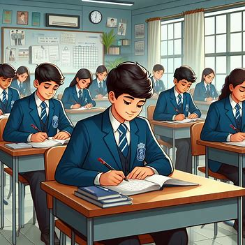

For students, by the students!
CMS Handouts is a unofficial comprehensive platform created by the student of City
Montessori School, tailored for 10th-grade
students gearing up for board examinations. It offers access to first
and second comparative examinations, as well as first and second
pre-board examination papers of City Montessori School. Additionally, students can benefit from
previous year board questions, providing a holistic understanding of
exam patterns, structures, and difficulty levels—all provided free of
charge.
